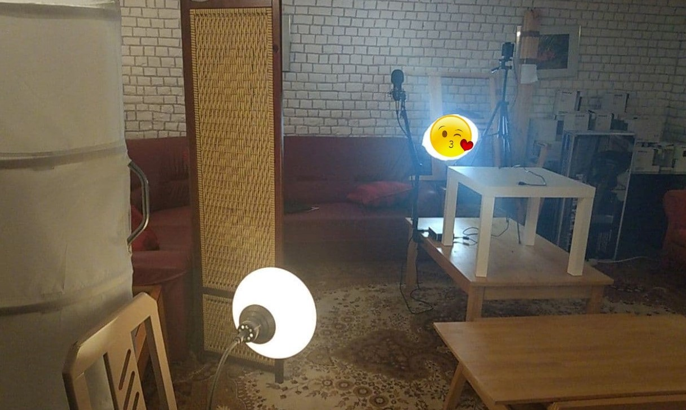
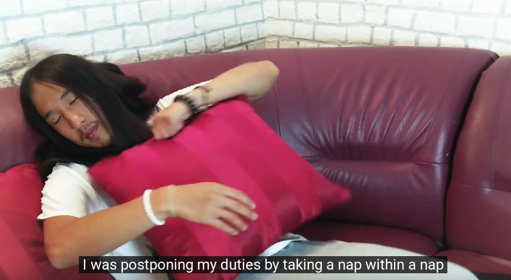
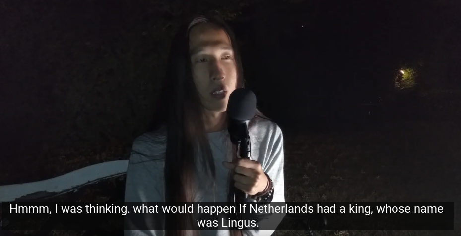
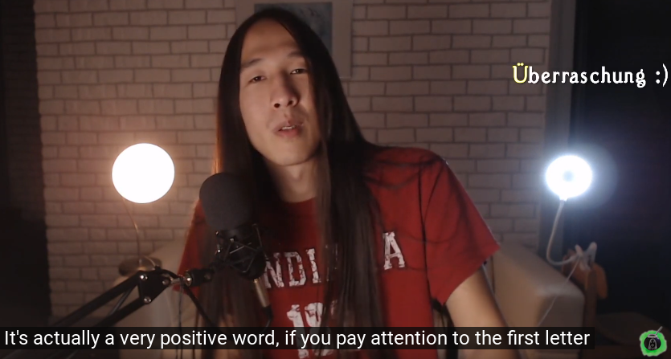
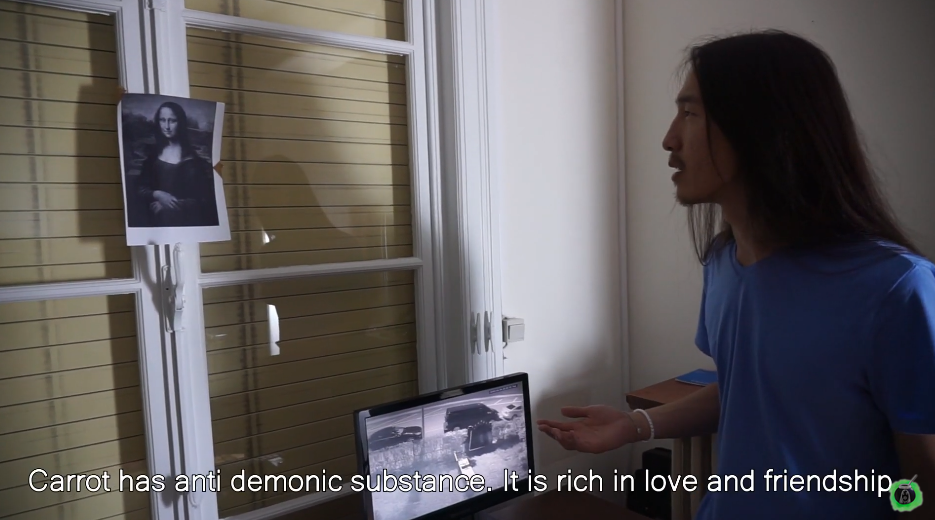
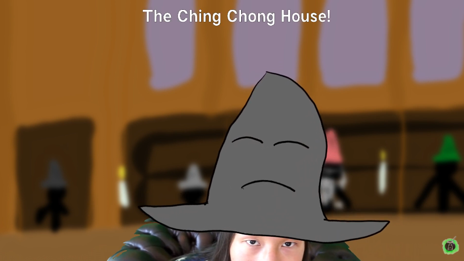
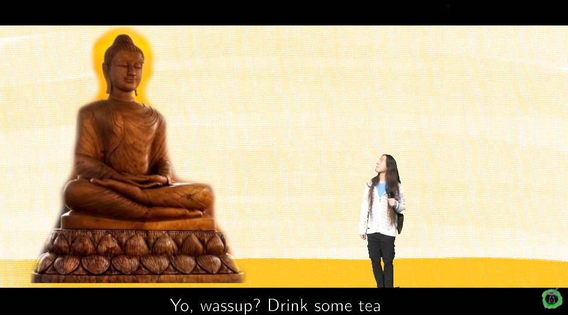

Introduction
Just as stars shine brighter at night, Batman's video series "Limbo" was born from his procrastination. It all started when he was procrastinating with making videos for over a year. He wanted to share his humor alongside his passion for rhetoric on YouTube. His friends have been encouraging him to make online contents, and one day - Batman spontaneously decided to make a low budget video for his friends, a parody of Inception, in honor to his procrastination. (This series contains movie parodies and hidden innapropriate jokes)
Limbo - Episode 0 - The Unexpected Encounter
The storyline was inspired by "The Fool's Journey" based on Tarot deck. Each episode corresponds to one Major Arcana card starting from 0 to 21. In the episode 0, Batman (The Fool) begins his journey when he postpones his duty by taking a nap within a nap within another nap. That is how he enters Limbo, where he will encounter different figures, who will teach him fundamentals of rhetoric. However, most of the plots and dialogues are random and bizarre, due to the nature of the dream world.
(Rhetoric can be described as an ancient art of thinking and speaking. We need to learn how people think, in order to persuade minds of people and reach their hearts. Philosophy is used to find, learn and understand life, which can be considered as an input. Rhetoric is used to effectively deliver the ideas to others, it acts as an output. If there is any superman among us, then it's the person, who balanced these two arts/disciplines.)
Limbo - Episode 1 - The Rhetorician
The first episode's structure is inspired by works of Plato, where he often has a dialogue with Socrates. Batman's initial idea was to interview Socrates, but that seemed neither silly nor authentic. So, he had to think of another person, who is known for being a famous figure among public speakers, in his opinion, the best choice seemed to be - Alois Schicklgruber, aka Adolf Hitler.
The meanings of the subtitles and the German speech mostly don't correspont, sometimes they contradict each other. All three layers(Batman, Hitler in German, Hitler's subtitles) have their own random jokes with historical references and movie parodies(Matrix, Invictus)
The Fuhrer(The Magician I) offers the golden lesson of rhetoric - know the audience. This is the most crucial thing to prepare before starting any conversation - by knowing the values and level of understandings of our listener, we adjust our speech, so that our words become highly effective. The more we know about the other person, the better. The mind of our listeners will be more open to our our ideas and our words will be one step closer to their hearts.
Limbo - Episode 2 - The Guidance
(Batman had procrastinated further with the series and a few months passed. He forgot his YouTube account's password. So, he started uploading videos on his extra Google account, which he didn't use much before. In the past, he had created the account Hachapuri /Hinkali/ for one of his devices, he randomly gave it names of his favorite Georgian foods.)
The episode begins by a conversation with Hitler, in which the Fuhrer tells Batman that it's about time he wakes up. Adolf shoots Batman after saying that he needs to take the leap of faith. Batman wakes up in the previous layer of nap. He talks about his procrastination, which gets interrupted by a YouTube ad.
Angela Merkel (The High Priestess II) in a form of islamic Schmiterling appears and gives advice to Batman. She talks about the importance of credibility, which is also known as Ethos. It is one of the three pillars of rhetoric, alongside Pathos and Logos.
People would always listen and accept words coming from people who they can trust, because those "trusted" people have a solid background. Remember the story of a girl who shouted "wolves" 3 times, the villagers didn't come the third time as they had thought that she was lying. That is why it is highly recommended to establish an emotional or logical credibility before or in the beginning of speeches. For example, you can mention about your background that is related to topic, maybe something which the audience could accept you as someone knowleadgable or as someone who they can relate to.
Limbo - Episode 3 - Emotion
Batman takes a nap again, in which he sees nightmares of Serbian-Albanian football match. An Albanian nationalist devil whispers in his ears a few politically biased words. He ends up in Limbo again, but this time, he is in the Limbo of nightmares. This was a blessing in disguice, as he gets a chance to confront his darkness, which bothered him from inside.
Within the chamber of emotions, he sees Froggie rampaging Batman's inner world. Froggie sings a song called Sonsii (let me hear) with throatsinging. Mona Lisa speaks to Batman, saying that a carrot is required to make friends with Froggie. Mona Lisa(The Empress III) shows that a small act of kindness can turn anger into love.
Batman talks with Froggie in a civil way and they discuss problems related to emotions. Batman confesses that emotions are difficult for him to understand. They talk about the importance of emotions in public speaking, which also known as Pathos. The effect of carrot wears off and Froggie becomes grumpy again.
I assume most of us(me included) like to believe that we are intellectual, rational beings, who make decisions based on logical thinking. Probably this way of seeing ourselves further detaches us from from our true nature. Public speakers usually tend to believe that we are all emotional and instinctive beings. We should target and focus on the emotion of our listeners, because when the right emotion is triggered, people become more willing to listen. It doesn't mean we have to always speak emotionally, but our main message has to have a bit of an emotional flavor to increase the effectiveness of our speeches.
Limbo - Episode 4 - The Order of the Rooster
The Episode 4 begins with flashbacks of Batman's childhood in a wizarding school. (he was raised up with Harry Potter books, films and games). Then fast forwards to present story, when Froggie challenges Batman to a wizarding duel. Froggie immediately kills Batman with the forbidden spell - Avada Kedavra.
Batman wakes up at the King's Cross station and notices a dying horcrux of Froggie under a bench. Then, a rooster shows up and starts talking to Batman. Batman cracks a joke or two and gets interrupted by a breaking news. Afterwards, the rooster(The Emperor IV) teaches an important aspect of rhetoric - Logos.
The rooster explains that people like to think that they approach life logically. So, we need to adjust our words with structures and arguments, that fits the logical thinking of our listeners. When we present our speech with a clear structure and valid arguments for our audience, it becomes much easier for them to digest the ideas we are trying to deliver. (These tips may sound simple and obvious, but they are often overlooked.)
Limbo - Episode 5 - The Exit
(Probably, it's the most complex episode so far, in terms of story and feelings. Batman had meditated, and he travelled in his inner world. Strangely, he was pulled to the core of earth by a strange force. He sank deep down to ocean, earth, lava and ended up in a dark world, where he met the spirit of the Mother Earth. She asked for help, as she said that she won't last long at this rate. Batman felt sad and helpess, but then he decided to dedicate a Limbo episode for this cause, as it's the only thing he is good at.)
It begins with Batman and the rooster at the King's Cross station. The rooster tells Batman to go to the place with the one tree and gives him a small guitar. Batman takes the guitar and sings "I'm Goofy Goober Rock". Shortly, he meets master Bruce Lee underneath the tree and tells how he ended up there. Bruce Lee explains that Batman is on the verge of life and death, the only way out is to go into the heart shaped pond.
While descending into the water, Batman sees two deers(a reference Buddha's story after enlightenment). They say "moo", like cows, which surprises Batman. Then, he sees a sunken ship, covered in flowers, on the bottom of the sea. Batman goes into the ship and he meets the Holy Teacher Buddha(The Hierophant V). (Batman had a dream of seeing Buddha's statue in a sunken ship covered by flowers)
Buddha cracks a lot of jokes, but also offers an invaluable advice to Batman - when presenting speeches, it is highly preferable to have a goodwill for others and think about what benefits our audience will get from listening to us. That is one of the strongest forces to convince/persuade others and mobilize people. (Now, these tips may sound like advice for manipulation, but argumentation, persuasion, manipulation are all the same thing, with slightly different connotations. They surround us everyday in society, any conversation between family, friends, teachers, poems, songs, books, movies, ads and many others contain argumentantions. "Good" or "Bad" all depends on who uses them and how we see them.)
When Batman asks how to get out, Buddha advices to go into another, a bit darker, heart shaped pond Batman goes into the water and meets Ugandan Knuckles. When Batman lands on the bottom, he sees another heart shaped pond, but this time its completely dark. He guesses that probably this is the only way out and dives in.
While falling further down, he listens to lullaby melody, the melody that is engraved in his heart. Batman sees a land with a picture of himself and Froggie together(a reference to Kingdom Hearts). When he descends on the canvas of his heart, he sees a bright greenish light. It turns out to be his plant Harambe from his previous video about the Mongolian language. Harambe asks for help and says that there is not enough time left. The light of Harambe goes into Batman and becomes part of his heart.
Froggie made an entire video for commentaries on this episode, as it was full of random details.